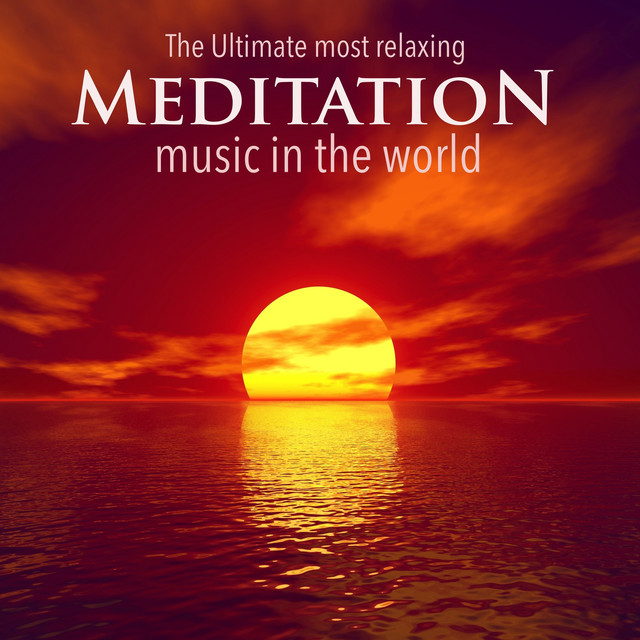

Music, Mindfullness, Loving-Kindness, and
Guided Meditation’s for your Mental Peace
Experience the profound tranquility that millions around the world have discovered. Elevate your mental well-being with our curated collection of music, mindfulness practices, loving-kindness exercises, and guided meditations. Our extensive library offers a variety of options to help you cultivate inner peace and balance. Whether you're seeking calm, compassion, or clarity, our programs are designed to support your mental health journey. Simply select a session, relax, and let your mind find its harmony
Tap into serenity with our curated meditation music. Let calming melodies guide you to a place of peace and relaxation. Perfect for your mindfulness journey, our soothing sounds will help you unwind and focus. Press play and find your inner calm with PeacePath

Mindfulness
Discover tranquility with our guided mindfulness videos. Each session is designed to help you center your thoughts and find peace in the present moment. Tap here to start your journey to a more mindful and serene you with PeacePath
Meditation Benefits by 'Beth Ruhmann'
Metta
Embrace loving-kindness with our guided Metta meditation videos. Let gentle guidance lead you to a place of compassion and connection. Click here to nurture a warm and open heart with PeacePath.
Transcendental
Elevate your mind with our guided Transcendental meditation videos. Experience deep relaxation and heightened awareness as you transcend everyday stress. Tap here to embark on a journey of profound inner peace with PeacePath
Body Scan
Experience deep relaxation with our guided Body Scan meditation videos. Gently tune into your body and release tension from head to toe. Click here to rejuvenate and reconnect with yourself through PeacePath.
Guided Meditation
Unlock peace and clarity with our guided meditation videos. Follow soothing instructions to calm your mind and rejuvenate your spirit. Click here to embark on a journey to inner tranquility with PeacePath.
Join the millions of Meditators world wide worldwide.
“As a first-time user of PeacePath, I'm thrilled with the mental health videos for meditation, yoga, and sleep. The guided meditations are soothing, and having access to an online counselor is a huge plus. This app has quickly become a key part of my self-care routine”
Sam from Louisville
★★★★★
“As a regular user of PeacePath, I can confidently say this app is indispensable for my mental health. The meditation, yoga, and sleep videos are top-notch, and the guided sessions always leave me feeling calm and refreshed. The online counselor support has been incredibly helpful too. PeacePath has truly transformed my self-care routine!”
John from Chicago
★★★★
“After using PeacePath for the past two years, I can say it has been a lifesaver for my mental health. The meditation, yoga, and sleep videos are consistently excellent, and the guided sessions are incredibly calming. The online counselor support has been a crucial resource for me. PeacePath has significantly improved my self-care routine and overall well-being”
Sylvia from Little Rock
★★★★★
“I've been using PeacePath for a while now, and it's been fantastic. The meditation and yoga videos are incredibly soothing, and the sleep resources have improved my rest significantly. I also appreciate the online counselor support—it’s made a real difference in my mental well-being. PeacePath is a vital part of my daily routine!”
Matthew from Bend
★★★★★
FAQ form FAQs:
There are a wide array of methods to get started with meditation. Some of these include: taking an online course to learn the basics, get a meditation app that teaches you the basics and provides you with a library of online courses, or visit a meditation studio near you to learn from someone in person. When starting out, remember that meditation is a practice and a skill, and it will require time to get better at it. Like everything else, developing the habits that are involved in meditation requires regular practice and discipline.
The simple answer to this question is no. Meditation is all about quieting the thoughts of the mind, however, being truly thoughtless is something that very few people in the world ever achieve. For 99% of meditators, meditation is the practice of exercising focus, and as thoughts come into our awareness or distract us, intentionally bringing our minds back to focus. Thoughts will always arise during meditation, and that is absolutely normal. The goal is not to become truly thoughtless, but to change the relationship we have with our thoughts. The relationship we want to change is the importance that we give to our thoughts. By learning how to detach from thoughts in order to return to focus, we are learning how to detach from the meaning and the control that we give to them, which allows us to become more intentional with our focus and our attention.
The best way to start a meditation session is to dive into a state of calm with several deep breaths. By taking 4 or more deep breaths with slightly longer exhales, we can ease ourselves into a relaxed physiological state that will facilitate the relaxed attention that is usually the end goal of meditation. Another popular way to start a meditation session is to intentionally reconnect with the present moment. This often looks like shifting focus after 30 seconds to a minute from the smells of the present, to the bodily sensations of the present, to some sounds you are hearing, and some of the tastes you are experiencing. The goal is to run through the senses and pay close attention to whatever version of those the present moment has to offer up.
You can change your life with meditation by adopting a daily meditation practice. Daily meditation for 15 minutes or more has been shown to improve memory recall, cognitive performance, compassion & empathy, and rational thinking, all while combating depression and anxiety by making the brain less likely to even experience stress in the first place. One thing most people are surprised to learn is that meditation is a daily practice of most of the world’s highest functioning people, including people like Lebron James, Steve Jobs, Arianna Huffington, Will Smith, and Kendrick Lamar to name just a few of the hundreds and thousands. Meditation is a great starting point to begin creating changes in your life for the better